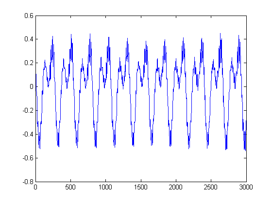

Clocked Reads with the Support Package
This example shows how to perform a clocked read of a sensor using the Support Package. Clocked reads collect many samples at once at a specified sample rate.
Contents
Create a Data Acquisition Toolbox session
s = sdaq.createSession;
Configure session for clocked reads
The session should be configured with a sample rate and duration. Sample rate is determined by the Rate property (currently set to 44.1kHz, the standard sample rate for CD quality audio). Duration is determined by either the NumberOfScans property (the number of samples to acquire) or the DurationInSeconds property (how long to acquire samples). NumberOfScans and DurationInSeconds are interdependant; it's only necessary to change one of them.
Note that Data Acquisition Toolbox requires that the rate be set before adding any SensorDAQ (and only SensorDAQ) channels to the device. Changing the rate after adding SensorDAQ channels will cause an error. Therefore, always configure sessions for clocked aquisition before adding SensorDAQ channels.
s.Rate = 44100; s.NumberOfScans = 3000;
Add a sensor channel and retrieve the scaling function
sdaq.addSensor(s,1,sdaq.Sensors.Microphone); scale = sdaq.getScaleFun(sdaq.Sensors.Microphone);
Collect a set of data and scale it
These lines are essentially identical to the corresponding lines for unclocked input; the only difference is that s.inputSingleScan has been replaced by s.startForeground. startForeground tells the session to collect a vector of data according to the session's properties.
Also, note that the scaling functions returned by getScaleFun can scale vectors and matricies as well as scalar values.
data = scale(s.startForeground); plot(data);
Note that we could have used s.startBackground instead. s.startBackground allows MATLAB to process other commands while the session is collecting data. This is helpful for continuously reading data from a device and processing it on the fly. See the documentation for daq.Session.startBackground for more information.
Playback
data contains about 68ms of sound data. We can play back this sound data using wavplay:
wavplay(data,s.Rate);
With so short a sample set (chosen for the legibility of the plot), the sound is pretty unremarkable. However, it's possible to collect data for much longer and produce uncompressed CD quality audio using SensorDAQ and a microphone sensor.
Clean up
delete(s);
MATLAB Support Package for Vernier SensorDAQ Version 1.0